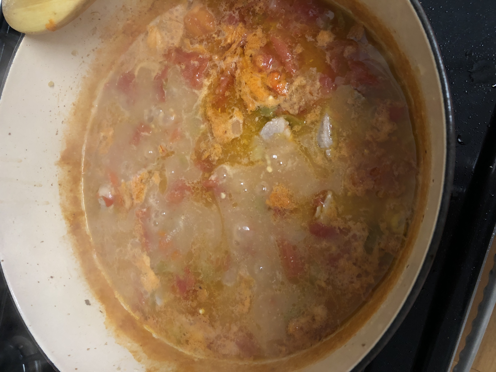

Pork Green Chili

Pork Green Chili
When I was young, green chili was on the dinner table at least once or twice
a week. With a short ingredient list, including cubed pork shoulder,
roasted Hatch or Pueblo green chilis, this warm, hearty meal is an
easy weeknight dinner. Pair with fresh flour tortillas for a full meal.
Ingredients
- 2lbs pork shoulder- cubed
- 5 medium Hatch or Pueblo green chilis
- 1 medium yellow onion- chopped
- 4 cloves garlic- minced
- 15oz can fire roasted tomatoes
- 2/3 cup flour
- 8 cups chicken stock (or 8 cups water and 1tbs better than bouillon)
- 2tbs oil
- salt and pepper to taste
Steps
- Preheat the oven or broiler to 475 degrees and line a sheet pan with tin foil.
- Wash and dry the green chilis. Leave the stems in tact and rub oil on the outside. Set
them on the foil lined sheet pan. Roast or broil until the skin is charred and bubbly.
After they are taken out of the oven, cover them with foil, and set aside to cool.
- Add 2tbs oil to the bottom of a heavy dutch oven at medium heat and fry the cubed pork until no longer
pink. Fry pork in batches so as to not overcrowd the pan. Set the fried pieces aside on a
paper towel lined plate. Continue to fry the pork until all of it is cooked. Add the finished
pork back into the pan.
- While the meat is frying peel the cooled chili. At this point you can choose to remove the seeds. Chop
the chili and set aside.
- Add the chopped onion and garlic to the fried pork cubes. Cook for 2-3
minutes or until softened.
- Add 2/3 cup flour to the cooked pork and onion mixture. Stir until flour
is fully incorporated making sure the flour does not burn.
- With your stove still at medium heat, continuously stir while adding 4 cups of water/broth at a time until all 8 cups are added,
continue to stir until the broth thickens.
- Add chopped green chili and 15oz can of fire roasted tomatoes.
- Let simmer at low heat for 30 minutes.
- Taste your broth and add salt and pepper to your liking.
Back to main recipe page